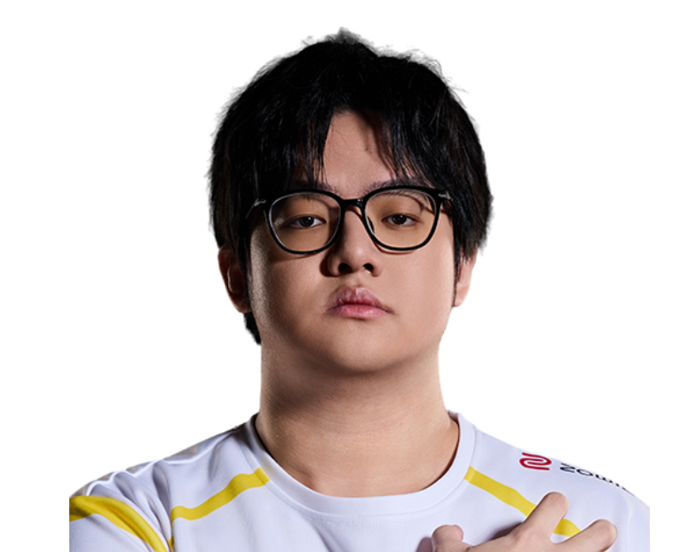

Trace Esports / 吴雨峰
Toosy.
ALL IN. EVERY ROUND.CypherToosy / 吴雨峰
Toosy / TE
ONE NAME.EVERY ROUND.ALL IN.
吴雨峰，Trace Esports。
从每次选下英雄，到每次站上赛场。
Toosy / 人物与赛场档案MOMENTS
MOMENTS
THAT MATTER.
PORTRAIT / Toosy Toosy.Cypher / 2 张地图
Toosy.Cypher / 2 张地图 2026-09-04 / 比赛档案
2026-09-04 / 比赛档案
Toosy.2026-09-04 / 比赛档案CN EVO 26: Act 3 Ro16
TE / UR
0 : 2查看原始比赛 ↗Toosy.
Trace Esports
人物肖像与英雄原画；未收录本人赛场照片。
官方肖像 / 英雄原画 / 比赛档案
Toosy / 职业英雄池
DIFFERENT AGENTS.
SAME PLAYER.
从最熟悉的英雄，看到每一种打法。零
Cypher.
100% 全英雄使用占比
2职业出场地图
165.8平均战斗评分 ACS
0.81击杀 / 死亡 K:D
26总击杀
0首杀
VLR 全时期职业数据 · 2026-11-02 快照 · 出场单位为地图，使用占比不是胜率。查看原始统计 ↗
Toosy / 比赛记录ONE PLAYER.
ONE PLAYER.
EVERY ROUND.
2职业地图
26总击杀
0.81全英雄 K/D
CN EVO 26: Act 3 Ro16
TE / UR0 : 2+
最近已收录系列赛；生涯总计由全英雄表求和，K/D 为总击杀除以总死亡。

下一位 / TE 阵容